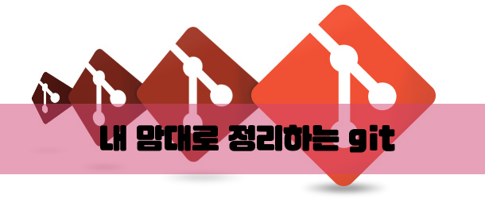

이 포스트는 git을 접하다 보면 마주치는 다양한 상황들에 대해 대처하기 위해 정리한 글이다.
Ctrl+F 키를 눌러 원하시는 키워드를 검색하시면 다양한 케이스들을 볼 수 있다.
이 문서는 계속해서 업데이트 될 예정이고, 댓글로 제보 해주면 감사할 것 같다 >_<
혹시 문제 해결이 되지 않는다면 검색 키워드들을 조합해서 검색해보길 바란다.
취소, 되돌아가기, 삭제: undo, reset, remove
되돌아가기: revert, retrieve
특정: specific
미작동: not working
.gitignore가 작동하지 않을 때
검색 키워드: .gitignore not working
커밋 메시지는 자기 입맛에 맞게 수정하면 된다.
특정 브랜치 클론하기
검색 키워드: git specific branch clone
폴더명을 입력하지 않으면 원격 저장소 이름으로 폴더가 생성된다.
특정 커밋 클론하기
검색 키워드: git clone specific commit
한 번에 땡겨오는 명령어는 없는 것 같다.
add한 파일 취소시키기
검색 키워드: git undo add
커밋을 하기 전에 add한 파일을 취소시킬 때 유용하다.
add한 모든 파일을 취소 시키려면 file을 빼고 입력하면 된다.
git status를 찍어보면 untracked 상태로 돌아간 걸 확인할 수 있다.
특정 커밋으로 돌아가기
검색 키워드: git reset commit to master
로컬에서 가장 최근 커밋 삭제
검색 키워드: git reset recent commit
git log –oneline을 찍어보면 가장 최근 커밋이 날아간 걸 볼 수 있다.
리모트 저장소 특정 커밋까지 삭제
검색 키워드: git undo remote push
삭제하기 직전 커밋까지만 살고 그 이후의 커밋은 날아간다.
워킹 디렉토리 깔끔하게 하기
검색 키워드: git reset untracked files
untracked 파일들이 날아간다.
특정 커밋으로 돌아갔을 때 잡다구레한 파일들을 날릴 때 유용하다.
로컬/리모트 브랜치 삭제하기
검색 키워드: git remove remote branch
순서대로 로컬/리모트 저장소에서 브랜치를 삭제하는 명령어이다.
Alias
|
|
첫 번째 라인에서 alias(별칭)을 글로벌로 선언함.
2, 3번 라인은 동일함.
add와 commit 동시에 하기
|
|
명령어 두 개가 혼재돼있을 때는 첫 명령어에 !을 붙여야 정상 작동한다.
윈도우에서는 ‘’ 대신에 “”을 써야 작동하는 것 같다
add와 commit을 매번하기 귀찮으므로 필자가 자주 쓰는 alias이다.
alias 관리
|
|
첫 번째 라인은 alias 목록을 보여주고,
두 번째 라인은 alias를 삭제해주는 역할을 한다.
commit 메세지에 timestamp 넣기.
검색 키워드: git commit message time
첫 번째 라인은 Sun Dec 4 22:12:42 KST 2016 같은 형식으로 커밋 메시지가 나오고
두 번째 라인은 2016/12/04 22:25:13 같은 형식으로 커밋 메시지가 나온다.
로컬 저장소를 원격 저장소로부터 싱크 맞추기
검색 키워드: git sync with remote
로컬 브랜치 이름 바꾸기
검색 키워드: git branch rename